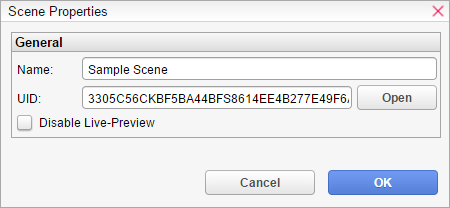

保存
<html>
<head>
<meta content="text/html; charset=utf-8" http-equiv="Content-Type"/>
<meta content="Adobe RoboHelp 2015" name="generator"/>
<title>保存</title>
<link href="default.css" rel="StyleSheet" type="text/css"/>
<script language="JavaScript" type="text/javascript">
//<![CDATA[
function reDo() {
  if (innerWidth != origWidth || innerHeight != origHeight)
     location.reload();
}
if ((parseInt(navigator.appVersion) == 4) && (navigator.appName == "Netscape")) {
	origWidth = innerWidth;
	origHeight = innerHeight;
	onresize = reDo;
}
onerror = null; 
//]]>
</script>
<style type="text/css">
<!--
div.WebHelpPopupMenu { position:absolute;
left:0px;
top:0px;
z-index:4;
visibility:hidden; }
p.WebHelpNavBar { text-align:right; }
-->
</style>
<script src="template/scripts/rh.min.js" type="text/javascript"></script>
<script src="template/scripts/common.min.js" type="text/javascript"></script>
<script src="template/scripts/topic.min.js" type="text/javascript"></script>
<script src="template/scripts/constants.js" type="text/javascript"></script>
<script src="template/scripts/utils.js" type="text/javascript"></script>
<script src="template/scripts/mhutils.js" type="text/javascript"></script>
<script src="template/scripts/mhlang.js" type="text/javascript"></script>
<script src="template/scripts/mhver.js" type="text/javascript"></script>
<script src="template/scripts/settings.js" type="text/javascript"></script>
<script src="template/scripts/XmlJsReader.js" type="text/javascript"></script>
<script src="template/scripts/loadparentdata.js" type="text/javascript"></script>
<script src="template/scripts/loadscreen.js" type="text/javascript"></script>
<script src="template/scripts/loadprojdata.js" type="text/javascript"></script>
<script src="template/scripts/mhtopic.js" type="text/javascript"></script>
<link href="template/styles/topic.min.css" rel="stylesheet" type="text/css"/>
<script type="text/javascript">
gRootRelPath = ".";
gCommonRootRelPath = ".";
gTopicId = "2.3.0_1";
</script>
<meta content="Exploring the Editor &gt; Scene Editor" name="topic-breadcrumbs"/>
</head>
<body>
<script src="./ehlpdhtm.js" type="text/javascript"></script>
<div id="header" style="width: 100%; position: relative;">
<p class="Topic_Heading">获取</p>
</div>
<p> </p>
<p><span class="Topic_Start">输入</span>获取</p>
<p> </p>
<p style="text-align: center;"></p>
<p style="text-align: center;"> </p>
<p class="Sub_Heading">设置</p>
<p>重置</p>
<p> </p>
<p class="Sub_Heading">更改</p>
<p>更改<span style="font-weight: bold;">更改</span>等待</p>
<p> </p>
<p class="Sub_Heading">用户</p>
<p>准备</p>
<p> </p>
<p class="Sub_Heading">保存</p>
<p>保存</p>
<p> </p>
</body>
</html>
